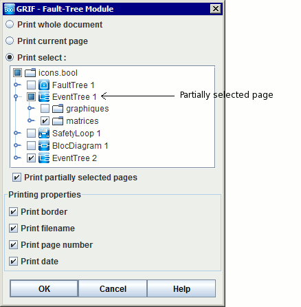
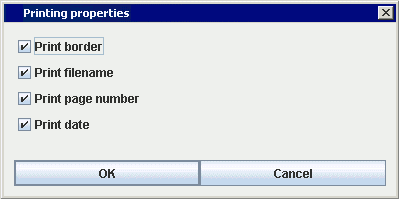

For printing, you have several commands at your disposal in the File menu File:
The Page setup function function allows you to choose the page orientation, the size of the margins, etc.

The Print function allows you to export .pdf document pages. Graphics are exports in a vectorial format in order to scale its whithout deterioration.
The print window appears and user can selected pages to print and configuration.
Print whole document : Allows to print whole document.
Print current page :Allows to print the current page.
Print select : Allows to print the selected pages. The Print partially selected pages allows you to print pages marked by a blue square.
Print border : Print a border on each page.
Print filename : Print the filename on the top left corner of each page.
Print page number : Print the page name and number on the bottom of each page.
Print date : Print the date on the top right corner of each page.
The Save in RTF file... function initially gives access to a window called Printing properties. Then to another called Information. And thirdly, a window is displayed allowing you to choose the folder in which the RTF file is to be saved.
When you select the Save in RTF file function, the first box to appear is that shown above. You can then select your preference: Print border, Print filename, Print page number and/or Print date.

Secondly, an Information window appears. It allows you to indicate whether you wish to print the current view, print the current page or print the whole document.